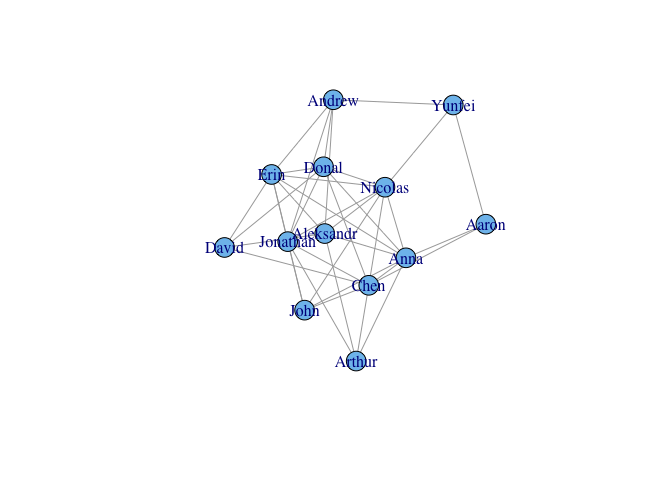
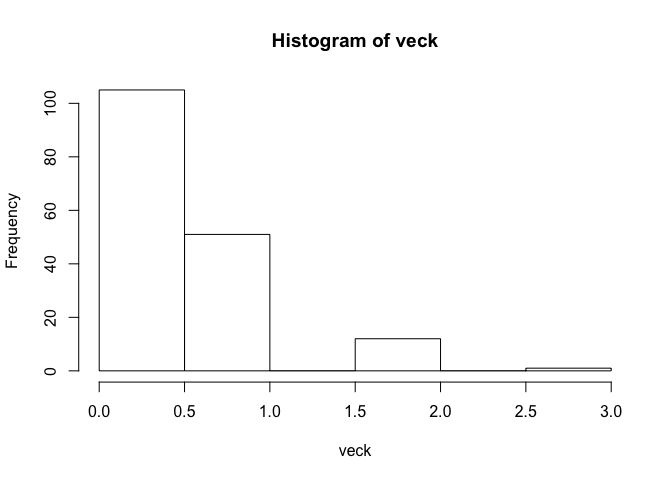
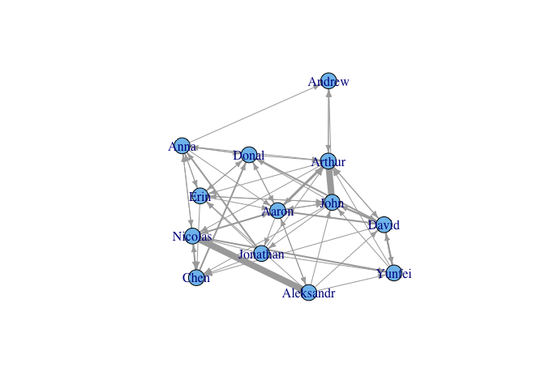
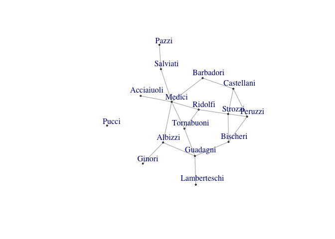
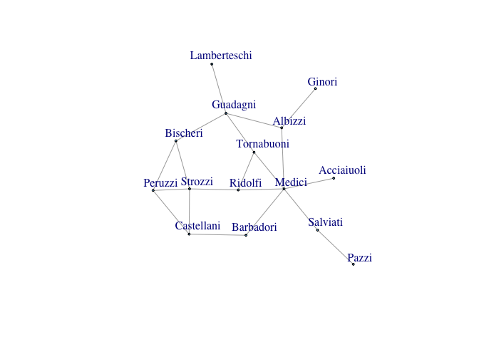

Social Network analysis
Social Network Analysis
Social Network Analysis
Load the required packages.
##----------------------------- Social Network Analysis ------------------------------
if (!require(network)) {install.packages("network"); require(network)} ## basic SNA stuff, relational data
if (!require(igraph)) {install.packages("igraph"); require(igraph)} ## fancy SNA stuff, main package
if (!require(tm)) {install.packages("tm"); require(tm)} ## text mining package
Load the data
##------------------------------ SNA Data Structure -------------------------------
dat3490 <- read.csv("http://people.fas.harvard.edu/~mair/psych3490/3490list.csv")
First Name: In some cases this contains full name.
fmName <- as.character(dat3490[,2])
fmName ## first and middle names
## [1] "Nicolas" "Arthur" "Donal Patrick"
## [4] "Aleksandr Garrett" "Chen" "Erin"
## [7] "John David Nadal" "Anna" "David"
## [10] "Yunfei" "Aaron Edward" "Andrew Garrett"
## [13] "Jonathan"
Extract the first name only
fmsplit <- strsplit(fmName, split = " ") ## separate first and middle name in structure
fmsplit
## [[1]]
## [1] "Nicolas"
##
## [[2]]
## [1] "Arthur"
##
## [[3]]
## [1] "Donal" "Patrick"
##
## [[4]]
## [1] "Aleksandr" "Garrett"
##
## [[5]]
## [1] "Chen"
##
## [[6]]
## [1] "Erin"
##
## [[7]]
## [1] "John" "David" "Nadal"
##
## [[8]]
## [1] "Anna"
##
## [[9]]
## [1] "David"
##
## [[10]]
## [1] "Yunfei"
##
## [[11]]
## [1] "Aaron" "Edward"
##
## [[12]]
## [1] "Andrew" "Garrett"
##
## [[13]]
## [1] "Jonathan"
Here we go
fName <- sapply(fmsplit, function(xx) xx[1]) ## extract first name only and store in vector
fName
## [1] "Nicolas" "Arthur" "Donal" "Aleksandr" "Chen"
## [6] "Erin" "John" "Anna" "David" "Yunfei"
## [11] "Aaron" "Andrew" "Jonathan"
N <- length(fName) ## number of participants
Unidirected Netowrk
Helper Functions
Diagonal Matrix
diag(5)
## [,1] [,2] [,3] [,4] [,5]
## [1,] 1 0 0 0 0
## [2,] 0 1 0 0 0
## [3,] 0 0 1 0 0
## [4,] 0 0 0 1 0
## [5,] 0 0 0 0 1
Access the upper Triangle of a Matrix
upper.tri(diag(5))
## [,1] [,2] [,3] [,4] [,5]
## [1,] FALSE TRUE TRUE TRUE TRUE
## [2,] FALSE FALSE TRUE TRUE TRUE
## [3,] FALSE FALSE FALSE TRUE TRUE
## [4,] FALSE FALSE FALSE FALSE TRUE
## [5,] FALSE FALSE FALSE FALSE FALSE
Access lower triangle by tranposing upper triangle
t(upper.tri(diag(5)))
## [,1] [,2] [,3] [,4] [,5]
## [1,] FALSE FALSE FALSE FALSE FALSE
## [2,] TRUE FALSE FALSE FALSE FALSE
## [3,] TRUE TRUE FALSE FALSE FALSE
## [4,] TRUE TRUE TRUE FALSE FALSE
## [5,] TRUE TRUE TRUE TRUE FALSE
Binary Nework with no weights, undirected network
## --- binary (no weights), undirected network
set.seed(123)
vec01 <- sample(0:1, N*(N-1)/2, replace = TRUE)
X <- diag(N)
X[upper.tri(X)] <- vec01
X <- X + t(X)
diag(X) <- 0
rownames(X) <- colnames(X) <- fName
X ## binary, symmetric adjacency matrix
## Nicolas Arthur Donal Aleksandr Chen Erin John Anna David Yunfei Aaron Andrew Jonathan
## Nicolas 0 0 1 1 1 1 1 1 0 1 0 0 1
## Arthur 0 0 0 1 1 0 0 1 0 0 0 0 1
## Donal 1 0 0 0 1 1 0 1 1 0 0 1 1
## Aleksandr 1 1 0 0 0 1 0 1 1 0 0 1 0
## Chen 1 1 1 0 0 0 1 1 1 0 1 0 1
## Erin 1 0 1 1 0 0 1 1 1 0 0 1 1
## John 1 0 0 0 1 1 0 1 0 0 0 0 1
## Anna 1 1 1 1 1 1 1 0 0 0 1 0 0
## David 0 0 1 1 1 1 0 0 0 0 0 0 0
## Yunfei 1 0 0 0 0 0 0 0 0 0 1 1 0
## Aaron 0 0 0 0 1 0 0 1 0 1 0 0 0
## Andrew 0 0 1 1 0 1 0 0 0 1 0 0 1
## Jonathan 1 1 1 0 1 1 1 0 0 0 0 1 0
Check for summetry of the resulting matrix
isSymmetric(X)
## [1] TRUE
graph.adjacency: function to create igraph from adjacency matrix.
net1 <- graph.adjacency(X, mode = "undirected") ## getting the data in shape in order to use it in igraph
Plot the network
plot(net1)

Get the edges
el1 <- get.edgelist(net1, names = TRUE) ## this would be the corresponding edge list
el1[1:10]
## [1] "Nicolas" "Nicolas" "Nicolas" "Nicolas" "Nicolas" "Nicolas" "Nicolas"
## [8] "Nicolas" "Arthur" "Arthur"
Weighted, directed network
##--- weighted, directed network
set.seed(123)
veck <- rpois(N*N, lambda = 0.5) ## create weights (drawing from a Poisson distribution)
veck
## [1] 0 1 0 1 2 0 0 1 0 0 2 0 1 0 0 1 0 0 0 2 1 1 1 3 1 1 0 0 0 0 2 1 1 1 0
## [36] 0 1 0 0 0 0 0 0 0 0 0 0 0 0 1 0 0 1 0 0 0 0 1 1 0 1 0 0 0 1 0 1 1 1 0
## [71] 1 1 1 0 0 0 0 1 0 0 0 1 0 1 0 0 2 1 1 0 0 1 0 1 0 0 1 0 0 0 0 0 0 2 0
## [106] 1 2 1 0 0 2 0 0 2 1 0 0 2 0 0 1 0 0 0 0 2 0 0 0 1 1 1 1 1 0 1 1 1 2 0
## [141] 0 0 0 0 1 0 0 0 0 1 1 0 0 0 0 0 0 0 0 0 0 0 1 0 0 0 1 0 0
hist(veck)

Create some outliers
veck[c(4, 20)] <- 8 ## let's create some outliers
hist(veck)

Populate the matrix
X <- matrix(veck, ncol = N)
diag(X) <- 0
rownames(X) <- colnames(X) <- fName
X ## adjacency matrix (not symmetric, weights)
## Nicolas Arthur Donal Aleksandr Chen Erin John Anna David Yunfei Aaron Andrew Jonathan
## Nicolas 0 0 0 0 1 0 0 1 0 2 1 0 0
## Arthur 1 0 0 0 0 1 0 0 1 0 1 1 0
## Donal 0 1 0 0 0 1 0 1 2 0 1 0 0
## Aleksandr 8 0 0 0 0 1 1 0 1 1 1 0 0
## Chen 2 0 2 0 0 0 0 0 0 0 0 0 0
## Erin 0 0 1 0 1 0 1 1 0 0 1 0 0
## John 0 8 1 0 1 1 0 0 2 0 1 1 1
## Anna 1 1 1 0 0 1 0 0 0 0 1 1 0
## David 0 1 0 0 1 0 2 0 0 2 2 0 0
## Yunfei 0 1 0 0 0 0 1 0 2 0 0 0 0
## Aaron 2 3 1 1 0 0 1 0 1 0 0 0 1
## Andrew 0 1 0 0 0 0 0 0 0 0 0 0 0
## Jonathan 1 1 0 0 1 1 0 2 0 1 0 0 0
Resulting Matrix is not symmetric
isSymmetric(X)
## [1] FALSE
Getting the data in shape.
net2 <- graph.adjacency(X, weighted = TRUE) ## getting the data in shape in order to use it in igraph
Get the edges of this network
E(net2)
## Edge sequence:
##
## [1] Nicolas -> Chen
## [2] Nicolas -> Anna
## [3] Nicolas -> Yunfei
## [4] Nicolas -> Aaron
## [5] Arthur -> Nicolas
## [6] Arthur -> Erin
## [7] Arthur -> David
...
## [57] Andrew -> Arthur
## [58] Jonathan -> Nicolas
## [59] Jonathan -> Arthur
## [60] Jonathan -> Chen
## [61] Jonathan -> Erin
## [62] Jonathan -> Anna
## [63] Jonathan -> Yunfei
What is the weight of each edge
E(net2)$weight ## edge weights
## [1] 1 1 2 1 1 1 1 1 1 1 1 1 2 1 8 1 1 1 1 1 2 2 1 1 1 1 1 8 1 1 1 2 1 1 1
## [36] 1 1 1 1 1 1 1 1 2 2 2 1 1 2 2 3 1 1 1 1 1 1 1 1 1 1 2 1
Vertices
V(net2)
## Vertex sequence:
## [1] "Nicolas" "Arthur" "Donal" "Aleksandr" "Chen"
## [6] "Erin" "John" "Anna" "David" "Yunfei"
## [11] "Aaron" "Andrew" "Jonathan"
plot(net2, edge.arrow.size = 0.5, edge.width = E(net2)$weight,
layout = layout.fruchterman.reingold)

plot.igraph provides numerous options for customizing the plot; see help
?igraph.plotting
interactive plots
tkplot(net2, edge.arrow.size = 0.5, edge.width = E(net2)$weight)
##------------------------------ Centrality and Prestige ------------------------
## ------- undirected networks ------
## Florentine families: During the renaissance (14th-17th century) Florence
## was the banking center of Europe (mostly due to the Medicis). During this period
## of time many aristocratic families lived in Florence. Aristocratic family
## members tend to marry members from other aristocratic families.
## In this example we explore the Florentine marriage network and compute
## various network measures
data(flo)
flo ## adjacency matrix, undirected --> symmetric
## Acciaiuoli Albizzi Barbadori Bischeri Castellani Ginori Guadagni Lamberteschi Medici Pazzi Peruzzi Pucci Ridolfi Salviati Strozzi Tornabuoni
## Acciaiuoli 0 0 0 0 0 0 0 0 1 0 0 0 0 0 0 0
## Albizzi 0 0 0 0 0 1 1 0 1 0 0 0 0 0 0 0
## Barbadori 0 0 0 0 1 0 0 0 1 0 0 0 0 0 0 0
## Bischeri 0 0 0 0 0 0 1 0 0 0 1 0 0 0 1 0
## Castellani 0 0 1 0 0 0 0 0 0 0 1 0 0 0 1 0
## Ginori 0 1 0 0 0 0 0 0 0 0 0 0 0 0 0 0
## Guadagni 0 1 0 1 0 0 0 1 0 0 0 0 0 0 0 1
## Lamberteschi 0 0 0 0 0 0 1 0 0 0 0 0 0 0 0 0
## Medici 1 1 1 0 0 0 0 0 0 0 0 0 1 1 0 1
## Pazzi 0 0 0 0 0 0 0 0 0 0 0 0 0 1 0 0
## Peruzzi 0 0 0 1 1 0 0 0 0 0 0 0 0 0 1 0
## Pucci 0 0 0 0 0 0 0 0 0 0 0 0 0 0 0 0
## Ridolfi 0 0 0 0 0 0 0 0 1 0 0 0 0 0 1 1
## Salviati 0 0 0 0 0 0 0 0 1 1 0 0 0 0 0 0
## Strozzi 0 0 0 1 1 0 0 0 0 0 1 0 1 0 0 0
## Tornabuoni 0 0 0 0 0 0 1 0 1 0 0 0 1 0 0 0
isSymmetric(flo)
## [1] TRUE
floG <- graph.adjacency(flo, mode = "undirected") ## let's just convert the adjacency matrix into an igraph object
plot(floG, vertex.size = 0, edge.arrow.size = 0.25,
vertex.label.dist = 0.5)

let's remove the poor Pucci's
floG1 <- delete.vertices(floG, v = "Pucci")
plot(floG1, vertex.size = 0, edge.arrow.size = 0.25,
vertex.label.dist = 0.5)

edges
E(floG1) ## edges
## Edge sequence:
##
## [1] Medici -- Acciaiuoli
## [2] Ginori -- Albizzi
## [3] Guadagni -- Albizzi
## [4] Medici -- Albizzi
## [5] Castellani -- Barbadori
## [6] Medici -- Barbadori
## [7] Guadagni -- Bischeri
## [8] Peruzzi -- Bischeri
## [9] Strozzi -- Bischeri
## [10] Peruzzi -- Castellani
## [11] Strozzi -- Castellani
## [12] Lamberteschi -- Guadagni
## [13] Tornabuoni -- Guadagni
## [14] Ridolfi -- Medici
## [15] Salviati -- Medici
## [16] Tornabuoni -- Medici
## [17] Salviati -- Pazzi
## [18] Strozzi -- Peruzzi
## [19] Strozzi -- Ridolfi
## [20] Tornabuoni -- Ridolfi
vertices
V(floG1) ## vertices
## Vertex sequence:
## [1] "Acciaiuoli" "Albizzi" "Barbadori" "Bischeri"
## [5] "Castellani" "Ginori" "Guadagni" "Lamberteschi"
## [9] "Medici" "Pazzi" "Peruzzi" "Ridolfi"
## [13] "Salviati" "Strozzi" "Tornabuoni"
number of nodes
N <- length(V(floG1)) ## number of nodes
## -- Nodal degree:
degvec <- sort(degree(floG1), decreasing = TRUE)
degvec
## Medici Guadagni Strozzi Albizzi Bischeri
## 6 4 4 3 3
## Castellani Peruzzi Ridolfi Tornabuoni Barbadori
## 3 3 3 3 2
## Salviati Acciaiuoli Ginori Lamberteschi Pazzi
## 2 1 1 1 1
mean(degvec) ## useful if we want to compare different marriage networks
## [1] 2.666667
Density:
Density of the graph is number of edges to number of possible edges
graph.density(floG1) ## ~19% of all possible edges are present
## [1] 0.1904762
Centrality measures:
Degree centrality
degCvec <- sort(degree(floG1), decreasing = TRUE) ## degree centrality
degCvec
## Medici Guadagni Strozzi Albizzi Bischeri
## 6 4 4 3 3
## Castellani Peruzzi Ridolfi Tornabuoni Barbadori
## 3 3 3 3 2
## Salviati Acciaiuoli Ginori Lamberteschi Pazzi
## 2 1 1 1 1
## since the degree depends on the number of actors we can standardize
## it by the number of nodes - 1 (e.g. for comparing across networks)
degCvec/(N-1)
## Medici Guadagni Strozzi Albizzi Bischeri
## 0.42857143 0.28571429 0.28571429 0.21428571 0.21428571
## Castellani Peruzzi Ridolfi Tornabuoni Barbadori
## 0.21428571 0.21428571 0.21428571 0.21428571 0.14285714
## Salviati Acciaiuoli Ginori Lamberteschi Pazzi
## 0.14285714 0.07142857 0.07142857 0.07142857 0.07142857
centralization.degree(floG1) ## group degree centralization
## $res
## [1] 1 3 2 3 3 1 4 1 6 1 3 3 2 4 3
##
## $centralization
## [1] 0.2380952
##
## $theoretical_max
## [1] 210
Closeness centrality
sort(closeness(floG1), decreasing = TRUE) ## closeness centrality
## Medici Ridolfi Albizzi Tornabuoni Guadagni
## 0.04000000 0.03571429 0.03448276 0.03448276 0.03333333
## Barbadori Strozzi Bischeri Castellani Salviati
## 0.03125000 0.03125000 0.02857143 0.02777778 0.02777778
## Acciaiuoli Peruzzi Ginori Lamberteschi Pazzi
## 0.02631579 0.02631579 0.02380952 0.02325581 0.02040816
shortest.paths(floG1) ## matrix with geodesics
## Acciaiuoli Albizzi Barbadori Bischeri Castellani Ginori
## Acciaiuoli 0 2 2 4 3 3
## Albizzi 2 0 2 2 3 1
## Barbadori 2 2 0 3 1 3
## Bischeri 4 2 3 0 2 3
## Castellani 3 3 1 2 0 4
## Ginori 3 1 3 3 4 0
## Guadagni 3 1 3 1 3 2
## Lamberteschi 4 2 4 2 4 3
## Medici 1 1 1 3 2 2
## Pazzi 3 3 3 5 4 4
## Peruzzi 4 3 2 1 1 4
## Ridolfi 2 2 2 2 2 3
## Salviati 2 2 2 4 3 3
## Strozzi 3 3 2 1 1 4
## Tornabuoni 2 2 2 2 3 3
## Guadagni Lamberteschi Medici Pazzi Peruzzi Ridolfi Salviati
## Acciaiuoli 3 4 1 3 4 2 2
## Albizzi 1 2 1 3 3 2 2
## Barbadori 3 4 1 3 2 2 2
## Bischeri 1 2 3 5 1 2 4
## Castellani 3 4 2 4 1 2 3
## Ginori 2 3 2 4 4 3 3
## Guadagni 0 1 2 4 2 2 3
## Lamberteschi 1 0 3 5 3 3 4
## Medici 2 3 0 2 3 1 1
## Pazzi 4 5 2 0 5 3 1
## Peruzzi 2 3 3 5 0 2 4
## Ridolfi 2 3 1 3 2 0 2
## Salviati 3 4 1 1 4 2 0
## Strozzi 2 3 2 4 1 1 3
## Tornabuoni 1 2 1 3 3 1 2
## Strozzi Tornabuoni
## Acciaiuoli 3 2
## Albizzi 3 2
## Barbadori 2 2
## Bischeri 1 2
## Castellani 1 3
## Ginori 4 3
## Guadagni 2 1
## Lamberteschi 3 2
## Medici 2 1
## Pazzi 4 3
## Peruzzi 1 3
## Ridolfi 1 1
## Salviati 3 2
## Strozzi 0 2
## Tornabuoni 2 0
centralization.closeness(floG1)
## $res
## [1] 0.3684211 0.4827586 0.4375000 0.4000000 0.3888889 0.3333333 0.4666667
## [8] 0.3255814 0.5600000 0.2857143 0.3684211 0.5000000 0.3888889 0.4375000
## [15] 0.4827586
##
## $centralization
## [1] 0.3224523
##
## $theoretical_max
## [1] 6.740741
## Betweenness centrality
sort(betweenness(floG1, directed = FALSE, normalized = TRUE), decreasing = TRUE) ## node betweenness
centralization.betweenness(floG1, directed = FALSE) ## aggregate measure
ebet <- edge.betweenness(floG1, directed = FALSE) ## edge betweenness
ebet
el <- get.edgelist(floG1)
el
data.frame(from = el[,1], to = el[,2], betweenness = ebet)
## ----- directed networks -----
## Let's now look at some directed trade data between countries
if (!require(SNAData)) {install.packages("SNAData"); require(SNAData)} ## datasets
data(basicGoods) ## it's a graphNEL object (general object structure for graphs)
tradenet <- igraph.from.graphNEL(basicGoods) ## convert it to an igraph object
x11()
plot(tradenet, vertex.size = 0, edge.arrow.size = 0.4,
vertex.label.dist = 0.5)
get.adjacency(tradenet) ## adjacency matrix
get.edgelist(tradenet)
## --- Indegree and Outdegree
## Degree Prestige (same as indegree)
sort(igraph:::degree(tradenet, mode = c("in")), decreasing = TRUE) ## indegree (imports)
## Outdegree
sort(igraph:::degree(tradenet, mode = c("out")), decreasing = TRUE) ## outdegree (exports)
## --- Centrality/Prestige
## Centrality as above (takes outgoing edges)
sort(closeness(tradenet), decreasing = TRUE) ## exports
## Prestige (takes ingoing edges)
sort(closeness(tradenet, mode = "in"), decreasing = TRUE) ## imports
##-------------------------- Cohesive Subgroups -------------------------------
load(url("http://people.fas.harvard.edu/~mair/psych3490/statementsGOP.rda"))
inspect(gopCorp.unique) ## 254 statements
inspect(tm_filter(gopCorp.unique, FUN = function(x) any(grep("sanctity", x)))) ## as an example
##--- re-organize the data as edge list
gopCorp.unique1 <- tm_map(gopCorp.unique, tolower)
mystopwords <- c("beleive", "shld", "1", "-", "wenot", "conservatismthe", "etc", "im",
"fatherthe", "conservativebelieve", "governmentprolife2nd",
"amendmentand", "valuessmall", "ive", "4", "familyrepublican",
"-government", "1st", "believe", "belive", "still", "dont",
"want","seen", "b", "w","can")
statementsGOP <- Corpus(VectorSource(lapply(gopCorp.unique1, removeWords,
c(mystopwords, stopwords("english")))))
slen <- unlist(tm_map(statementsGOP, function(tf) sum(termFreq(tf)))) ## statement length
statementsGOP <- statementsGOP[which(slen > 1)] ## select the statements with more than 1 word
statementsGOP
## function to get pairwise word structure suited for directed network graph
textsna <- function(str1) {
splitState <- scan_tokenizer(str1)
indmat <- matrix(c(1, rep(2:length(splitState), each = 2)), ncol = 2,
nrow = (length(splitState) - 1))
matrix(splitState[indmat], ncol = 2, byrow = TRUE)
}
statementPairs <- do.call(rbind, lapply(statementsGOP, textsna)) ## warnings can be ignored
statementsGOP[[1]]
statementPairs[1:11,] ## in row 11 the 2nd statement starts
## ----- end data preparation
## ------ create network and produce network plot
statementGraph <- graph.edgelist(statementPairs, directed = TRUE) ## make a graph with each row entry as a from-to vertex and an edge
E(statementGraph)$weight <- count.multiple(statementGraph) ## edge frequencies -- count how often an edge has exactly the same tail and edge vertices
statementGraph <- simplify(statementGraph, edge.attr.comb =
list(weight = max, name = "concat", "ignore") ) ## keep multiplicity as edges
E(statementGraph)$weight
set.seed(123)
ly <- layout.fruchterman.reingold(statementGraph) ## define layout (more concentric)
## ly <- layout.kamada.kawai(statementGraph) ## more branches going out of the center
x11()
plot(statementGraph, layout = ly, vertex.size = 2, edge.color = "lightgray",
edge.arrow.size = 0.05, edge.curved = FALSE,
vertex.label = NA,
rescale = FALSE,
xlim = c(-530, 630), ylim = c(-440, 600),
main= "Republican Statements (Large Communities)", asp = 0,
margin = -1)
##--------- compute cliques ------------
cliqList <- cliques(statementGraph, min = 4) ## find and all cliques (at least 4 nodes)
cliqList ## returns the node index only
V(statementGraph)$name ## gives the names
cliqlistN <- lapply(cliqList, function(xx) {
V(statementGraph)$name[xx]
})
cliqlistN
## let's extract the largest clique and produce a plot
cliqLarge <- largest.cliques(statementGraph)
cliqLarge
statementGraphSub <- induced.subgraph(statementGraph, cliqLarge[[1]])
x11()
plot(statementGraphSub, vertex.size = 2, edge.color = "gray",
vertex.color= "black", vertex.label.color = "blue",
edge.arrow.size = 1, edge.curved = FALSE, edge.width = E(statementGraphSub)$weight,
vertex.label.dist = 0.5, vertex.label.cex = 0.8, vertex.label.font = 2)
## ------ compute communities ---------
## A nice blog entry that decribes various community approaches can be found here:
## browseURL("http://stackoverflow.com/questions/9471906/what-are-the-differences-between-community-detection-algorithms-in-igraph")
## We use the wakltrap algorthim
xc <- walktrap.community(statementGraph, weights = E(statementGraph)$weight, step = 6) ## very quick
membership(xc) ## gives the community membership for each node
edgeList <- tapply(seq_along(membership(xc)), membership(xc), function(xx) xx) ## communities without labels
edgeList ## communities as list (containing node index)
comList <- tapply(membership(xc), membership(xc), names)
comList ## communities as list (containing node names)
length(comList) ## number of communities
comsize <- sapply(comList, length)
table(comsize)
barplot(table(comsize), main = "Community Size") ## frequency distribution of community sizes
bigComIndex <- which(comsize > 20) ## big communities (having more than 20 nodes)
bigComIndex
comList[bigComIndex]
coms3 <- edgeList[bigComIndex[[1]]] ## pull out first community
coms4 <- edgeList[bigComIndex[[3]]] ## pull out third community
## ------- produce a fancy plot: full network, big communities added
x11()
vcolo <- c(hcl(h=0,35,60),hcl(h=72,c=35,l=60),hcl(h=144,c=35,l=60),hcl(h=216,c=35,l=60),hcl(h=320,c=35,l=60))
op <- par(mar = c(1,2,1,1))
layout(matrix(c(1,1,2,3), 2, 2, byrow = TRUE))
plot(statementGraph, layout = ly, vertex.size = 2, edge.color = "lightgray",
edge.arrow.size = 0.05, edge.curved = FALSE,
vertex.label = NA,
rescale = FALSE,
xlim = c(-530, 630), ylim = c(-440, 600),
main= "Republican Statements (Large Communities)", asp = 0,
margin = -1)
comGraphBig1 <- induced.subgraph(statementGraph, coms3[[1]])
ly1 <- ly[unlist(coms3[[1]]),]
plot(comGraphBig1, layout = ly1, vertex.size = 3, edge.color = vcolo[2],
edge.arrow.size = 0.2, edge.curved = FALSE, vertex.label = NA,
vertex.label.dist = 0, vertex.label.cex = 0.8, vertex.label.font = 2,
rescale = FALSE, add=TRUE, vertex.color=vcolo[2],vertex.frame.color=vcolo[2],vertex.label.color=vcolo[2])
comGraphBig2 <- induced.subgraph(statementGraph, coms4[[1]])
ly1 <- ly[unlist(coms4[[1]]),]
plot(comGraphBig2, layout = ly1, vertex.size = 3, edge.color = vcolo[3],
edge.arrow.size = 0.2, edge.curved = FALSE, vertex.label = NA,
vertex.label.dist = 0, vertex.label.cex = 0.8, vertex.label.font = 2,
rescale = FALSE, add=TRUE, vertex.color=vcolo[3],vertex.frame.color=vcolo[3],vertex.label.color=vcolo[3])
op2 <- par(mar = c(4,1,1,1))
colo <- c(hcl(72,35,40),hcl(72,35,80))
comGraphBig1 <- induced.subgraph(statementGraph, unlist(edgeList[bigComIndex[1]]))
ly1 <- ly[unlist(edgeList[bigComIndex[1]]),]
plot(comGraphBig1, layout = ly1, vertex.size = 2, edge.color = colo[2],
vertex.color=colo[1],vertex.label.color=colo[1],
edge.arrow.size = 0.20, edge.curved = FALSE, edge.width = E(comGraphBig1)$weight/2,
vertex.label.dist = 0, vertex.label.cex = 0.8, vertex.label.font = 2,
rescale = FALSE, xlim=range(ly1[,1]), ylim=range(ly1[,2]))
colo <- c(hcl(144,35,40),hcl(144,35,80))
comGraphBig2 <- induced.subgraph(statementGraph, unlist(edgeList[bigComIndex[3]]))
ly1 <- ly[unlist(edgeList[bigComIndex[3]]),]
plot(comGraphBig2, layout = ly1, vertex.size = 2, edge.color = colo[2],
vertex.color=colo[1],vertex.label.color=colo[1],
edge.arrow.size = 0.20, edge.curved = FALSE, edge.width = E(comGraphBig2)$weight/2,
vertex.label.dist = 0, vertex.label.cex = 0.8, vertex.label.font = 2,
rescale = FALSE, xlim=range(ly1[,1]), ylim=range(ly1[,2]))
par(op)
par(op2)